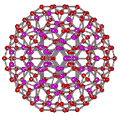

Puckering cluster

An icosahedral water cluster consisting of 280 water molecules has a central puckering dodecahedron. Only the oxygen atoms are shown in the Figure right. A full cluster also has twelve potential 100-water-molecule clusters surrounding the central 100-water molecular core. The puckering shown occurs with drops in the hydrogen bond energy (below left). Puckering not only changes the central dodecahedron but will flicker between new (surrounding) and old centers with the clusters disassembling and reforming as required, and as indicated in the animated Figure below right. Thus, the cluster is self-replicating as a single cluster also contains the seeds to form up to twelve other clusters.

Energetics in the puckering cluster
Puckering can occur with relatively small consequential distortion to the cluster as a whole. On the right is a graph showing the radial positions (vertical axis, — eight cubically arranged 14-molecule tetrahedra; — remaining twelve 14-molecule tetrahedra) in the six radial positions from the center (containing 1, 1, 3, 3, 3, 3 molecules, respectively) with the non-bonded cubic box length of the puckered water (horizontal axis). To generate this graph, all hydrogen-bonded distances were held at 2.8 Å (—); also shown are the mean second-neighbor distances (—) and their range (—-—). The puckering may explain the changes in the structure of the high-density liquid, characterized by the existence of interstitial molecules and commonly explained in terms of the collapse of the second neighbor shell, but
actually originating from the folding back of long rings, bringing pairs of molecules separated by several hydrogen-bonds close by in space. [4330].
As the eight cubically arranged 14- molecule tetrahedra pucker inward (blue lines, moving to the left), the remaining twelve 14-molecule tetrahedra (red lines) first expand slightly before being dragged inwards. It is clear that the significant movement of the inner two puckering water molecules (lowest two blue lines) is severely attenuated in the remaining molecules in the cluster. The spherical angle coordinates (θ, φ) of all the molecules also fluctuate a little (S.D. 0~3°, average 0.33°) during the puckering. The total volume (indicated by the surface positions given by the outer three blue and red lines) reduces throughout the puckering. The ES structure corresponds to about the 4.6 Å horizontal position when all 14-molecule tetrahedra are equivalent. The CS structure corresponds close to 3 Å where the inner cubically-arranged puckered water molecules are at their minimum permissible non-bonded distance apart.
Home | Site Index | Notes (equilibria) | Clusters | LSBU | Top
This page was established in 2003 and last updated by Martin Chaplin on 17 September, 2021

The preferred Web Browser is Mozilla Firefox